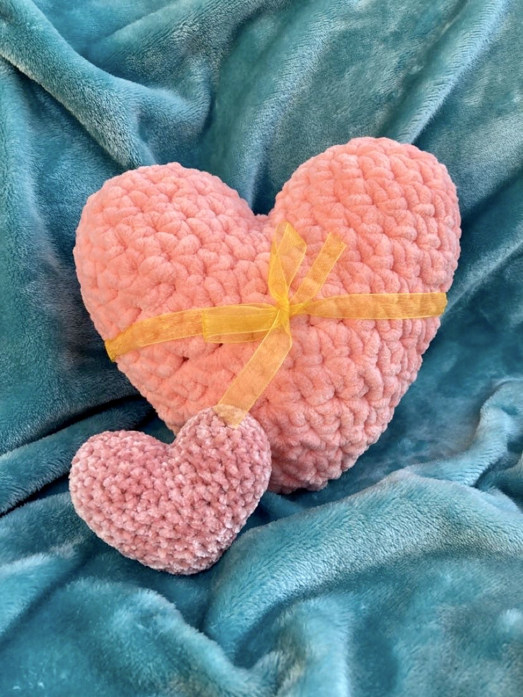

Qui suis-je?
Je m'appelle Magalie Chinchilla Chaput et j'adore crocheter comme passe-temps. Je crochet souvent des projets pour ma famille, mes amis et moi-même. Si vous êtes (ou devenez) un fanotique du crochet et de la laine comme moi, continuez à lire pour apprendre au sujet de mes expériences!

Mon parcours
C'est grâce à une enseigante en 6ième année que j'ai apris à crocheter dans le Club de Tricot. J'ai tout essayé, que ce soit du tricot, du crochet et même le tricotin! Je n'avais pas réalisé l'impacte qu'aurait le crochet dans ma vie au futur. Depuis, ce n'est que récement que j'ai véritablement trouvé une passion pour le crochet.
Aujourd'hui, je crochète pleins de projets de toutes sortes tels que des toutouts, des couvertes, des coussins et plus! C'est ma méthode préférée afin de diminuer mon stress, me relaxer et m'amuser.
Cependant, tout le monde a certains projets qu'il maîtrise mieux que d'autres. Pour moi, ce projet est l'amigurumi. Pour ceux qui ne connaissent pas ce terme, l'amigurumi est un mot qui signifit "l'art japonais du tricot ou crochet de petits animaux et de créatures anthropomorphes" (Wikipédia, janvier 2020). C'est super adorable. Pour cette raison j'adore créer des minis créatures tels que des bonhommes de neiges, des avocats, des méduses, et mêmes du mais sur un épi! Les possibilités sont infinies!
Mes projets
Voici quelques exemples de projets que j'ai constrius dans le passé. Pourtant qu'il existe autres projets tels que des couvertes et autres cadeaux que je n'ai pas photographiés, je vous présente la majorité. C'est très amusant de voir sa collection grandir lorsque le temps passe!



Les patrons
Pour ceux intéressés à reproduire les projets dans les images, voici les liens aux patrons gratuits des créateurs originaux! C'est à noter que changer la taille du crochet ou de la laine changera aussi la taille du produit final. Amusez-vous!
- Mais par Anne Bank Nielsen
J'admets que ce patron m'a causé des moments de frustration car les types de mailles qui produisent l'effet du mais sont très épaisses et moins plaisante à créer. Pourtant, j'adore le résultat final!
- Méduse par One Dog Woof
Ce patron était très facile à suivre et un bon patron pour apprendre à attacher plusieurs petits morceaux d'un projet afin de construire un tout adorable. Comme débutante, je me suis beaucoup amusé avec se projet.
- Avocat par Left-Handed Crocheter
Ce petit avocat sera toujours un de mes patrons préférés. Il est très facile à reproduire et te motive à pratiquer la transition qui a lieu lorsqu'on change de couleur. J'ai reçu une haute demande d'avocats, tout le monde en veut!
- Coeur par Bunnies and Yarn
Je viens tout récemment de compléter ce petit coeur et j'étais incapable de m'empêcher d'en faire un deuxième! Ce patron est très facile à suivre et il t'enseignera une nouvelle méthode intéressante afin de réaliser des formes particulières.